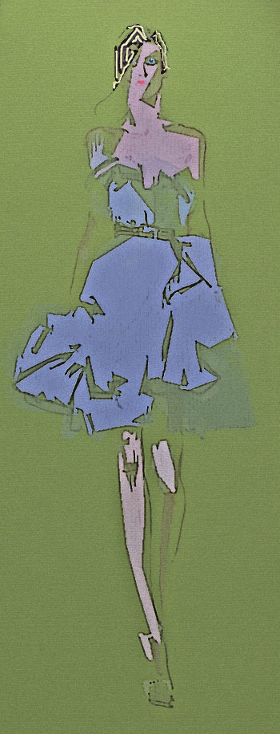

There Was a Woman Once
by Michael Cantor
At Ostende, the sea more black than blue;
and Bruges was mostly dark canals and white
lace antimacassars; she made me eat
moules for the first time, we both learned to drink
the amber Flemish beers and, thinking back,
there was a woman once, and she was tall.
There was a woman once and she was tall;
radiant, in an awkward way, with blue
eyes set too far apart, but her naked back
felt like silk, and her short-cropped, near-white
street waif hair looked swell behind a drink,
but what we liked to do the most was eat.
And what we liked to do the most was eat
our way across Manhattan, she was tall,
and life was good; the sex and food and drink
were good — weekends, sometimes, we’d hit the Blue
Note down on Hudson, hip crowd, black and white,
and we left something there we can’t get back.
And there was something there we can’t get back,
but what we liked to do the most was eat;
that time in Kyoto, the shoji screens all white,
there was a woman there, and she was tall;
grilled squid, the platter glazed dark brown and blue,
hot saké, served in little cups, the drink.
Hot saké, served in little cups, to drink,
and there was something there we can’t get back,
a sense of loss, unreachable and blue,
but what we liked we liked the most was eat.
There was a woman once, and she was tall,
her eyes were Baltic blue, her hair was white.
Her pretty eyes were blue, her hair was white.
Hot saké served in little cups to drink.
There was a woman once, and she was tall.
And something there was there we can’t get back.
But what we liked to do the most was eat.
Her hair white, white, so pretty eyes blue blue.
A woman once, go back, her eyes blue blue.
Her she so white, so tall, we loved drink eat.
Blue, white, back, drink, eat, eat, tall, tall tall tall.
(First published in Michael Cantor’s chapbook, The Performer, Pudding House, 2007)

|
|